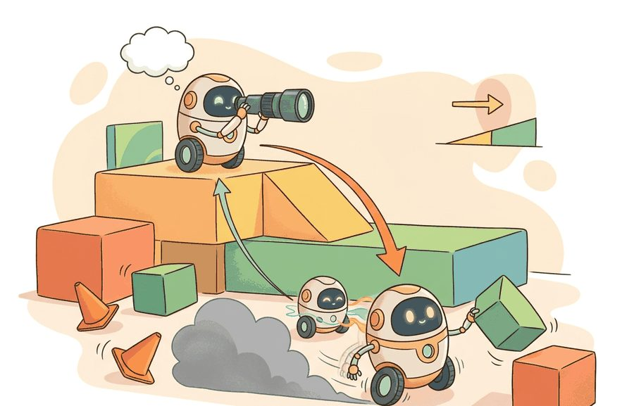
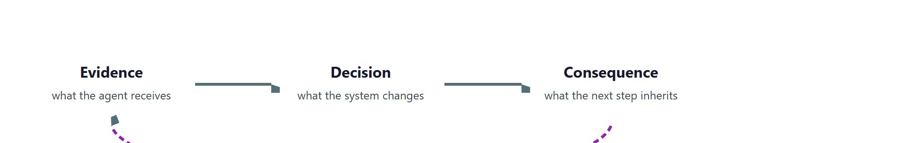

"Let the learned part handle what you cannot write down, and let the engineered part handle what you cannot afford to get wrong."
A Hybrid Systems Integrator

This section assumes familiarity with the basic perception-action loop from section 1.2 and with the end-to-end learned policy pipeline introduced in section 3.3. The option framework developed here reappears in section 26.2 (hierarchical reinforcement learning) and section 26.5 (skills and task decomposition), where it is extended to learned initiation sets and data-driven termination conditions. Readers interested in how language models slot into the top tier of a hierarchy should continue to section 33.2.
A warehouse robot spots a fallen box mid-route. Its fast reflex loop sidesteps in 8 ms. Its mid-level skill selector reroutes the delivery. Its task planner keeps the shift schedule intact. No single monolithic policy could act at all three timescales simultaneously. Hybrid and hierarchical architectures are the dominant design pattern for this reason: modern robots and autonomous systems must reason slowly about goals while reacting quickly to physics. You will build the option framework that formalizes this separation, trace how commands flow down the stack, and learn exactly where a learned policy fits alongside hand-engineered controllers.

Ask a single neural network to plan a ten-second route and close a one-millisecond torque loop in the same forward pass, and it will fail at both: that contradiction is exactly what hybrid and hierarchical architectures exist to dissolve, by giving each timescale its own controller and a clean contract between them. Figure 3.4 makes the unifying point: every tier runs the identical closed-loop cycle (evidence in, decision out, consequence inherited by the next step), and only the clock speed changes from tier to tier.
The key question in Hybrid and hierarchical architectures is practical: what must the agent know, what can it observe, what action is available, and what evidence shows that the action worked under the stated conditions?
A representation earns its place when it changes the measurable action interface. In hybrid and hierarchical architectures, the reader should keep asking which decision becomes easier, safer, or more reliable.
For Hybrid and hierarchical architectures, the practical design rule is to make the interface inspectable before optimization begins: inputs, outputs, units, latency, bounds, and failure labels should all be visible in the saved artifact.
Hybrid and hierarchical architectures exist because one controller rarely operates well at every time scale. Figure 3.4A shows the canonical layout: a high-level task planner issues subgoal commands to a mid-level skill selector, which delegates to low-level reactive controllers that close the loop at high frequency. A language-conditioned task policy may reason over minutes, a skill selector over seconds, and an impedance or velocity controller over milliseconds. The hierarchy separates "what should happen next" from "how this joint should move right now." A controller that must plan the next ten seconds and close a torque loop in one millisecond is not a controller: it is a contradiction.
Real systems make the motivation concrete. Boston Dynamics' Spot runs a three-tier hierarchy. A mission planner chooses navigation goals over tens of seconds. A locomotion controller adapts footfall patterns over roughly 0.5 seconds. Joint-level PD (Proportional-Derivative) controllers close the torque loop at 1 kHz. The frequency ratio across levels reaches 10,000 to one: 0.1 Hz at the top versus 1,000 Hz at the bottom. A flat architecture would force a single network to solve a 10-second navigation problem and a 1 ms torque problem in the same forward pass. That is why flat designs fail reliably at the extremes of either timescale. As a rough illustration of the sample-efficiency gap rather than a benchmarked figure, training a flat policy end-to-end typically needs on the order of tens of thousands of rollout episodes to cover both timescales, while a hierarchical design that trains each level separately can reach a comparable success rate in a small fraction of that, because each level sees a simpler, faster-converging problem.
So far: hierarchy exists because one controller cannot span both slow planning and fast control; Spot's three tiers (mission planner, locomotion controller, joint-level PD controller) show a roughly 10,000-to-one frequency ratio between top and bottom, and training each tier separately is typically far more sample-efficient than training one flat policy to cover the same span.
SayCan (Ahn et al., 2022) places a large language model at the task tier and pairs it with a library of learned skills. Each skill carries a value function that estimates whether the robot can execute it now. The LLM proposes which skill to run; the value function acts as the initiation set $I_\omega$ (the condition under which the option is allowed to start; defined formally below). RT-2 (Brohan et al., 2023) compresses some of this structure by fine-tuning a vision-language model to emit low-level actions directly. Even so, RT-2 typically runs inside an outer task loop that handles retries and subtask sequencing. No single model today operates reliably from natural-language intent down to 1 kHz torque output, which is why hierarchy persists in practice.
These systems all gesture at the same underlying structure, a start condition, an autonomous skill, and a stopping rule, and that recurring shape is precisely what the formal option model makes explicit. The option view from hierarchical reinforcement learning gives a useful formal model. An option is a reusable skill with explicit start and stop conditions, written $\omega = (I_\omega, \pi_\omega, \beta_\omega)$. Here $I_\omega$ says when the skill may start, $\pi_\omega$ maps local observations to low-level actions, and $\beta_\omega$ says when the skill should terminate. The high-level policy chooses $\omega_t$, while the low-level policy emits actions until termination. This architecture works under three conditions: skill boundaries are meaningful, termination is observable, and the high-level planner never asks a low-level skill to satisfy an impossible precondition.
Think of a recipe step like "simmer the sauce until it coats a spoon." The head chef (high-level policy) decides when to assign that step and who handles it ($I_\omega$: "only start after the tomatoes are crushed"). The line cook then works independently, adjusting the heat continuously according to their own judgment ($\pi_\omega$). They stop the moment the spoon test passes, not when the head chef walks back over ($\beta_\omega$). The head chef neither stirs the pot nor watches every second; they simply return when the cook calls out that the step is done and the kitchen moves on to the next task.
A common assumption is that the high-level planner in a hierarchical architecture continuously monitors and overrides the low-level controller at every timestep. This is incorrect: once an option $\omega$ is selected, the high-level policy suspends entirely and the low-level policy $\pi_\omega$ runs autonomously until $\beta_\omega$ fires. The correct mental model is delegation, not supervision. The high level sets a goal and waits; the low level owns the actuators until termination. Treating the hierarchy as continuous top-down supervision leads to designs that introduce unnecessary inter-level communication overhead, break the timing separation that makes hierarchy useful, and create race conditions where the planner interrupts a skill before its physical effect is complete.
If delegation means the low level owns the actuators until termination, then the moment of termination is where that ownership is handed back, which is why the termination condition deserves its own scrutiny. The termination condition $\beta_\omega$ matters physically because a robot that never releases control of a completed skill either wastes actuator effort or damages the environment. A "reach" skill that keeps commanding motion after contact will jam a wrist joint or crush an object; a "pour" skill that does not stop once the cup is full wastes fluid and corrupts downstream tasks. On real hardware, undetected over-run also saturates motor current limits, tripping fault states that require manual recovery.
Mechanically, $\beta_\omega$ is evaluated at every low-level timestep as a predicate over the current state: if $\beta_\omega(s_t) = \text{true}$, control returns to the high-level policy; otherwise the low-level policy continues. In practice the predicate checks one or more sensor signals against a threshold, such as force exceeding a contact limit, joint angle reaching a setpoint within tolerance, or elapsed time exceeding a budget. The threshold choice is a tuning decision: too tight and sensor noise causes premature exit; too loose and the skill over-runs.
The mechanism in Hybrid and hierarchical architectures is the contract between representation and action. Name what enters the module, what leaves it, which assumptions make that transformation valid, and which log would reveal a bad handoff.
Input: state $s_t$, option library $\Omega = \{\omega_1, \ldots, \omega_n\}$ where each $\omega_i = (I_{\omega_i}, \pi_{\omega_i}, \beta_{\omega_i})$, learning rate $\alpha$, high-level policy parameters $\theta$
Output: executed action sequence $a_{0:T}$, updated policy parameters $\theta'$, termination log
The option triple $\omega = (I_\omega, \pi_\omega, \beta_\omega)$ becomes concrete when each part is a function. The example runs a two-level controller on a reach-then-grasp task: a high-level policy picks an option, the option's low-level policy emits millisecond actions, and the option's termination function decides when control returns upward. The trace logs every boundary, which is exactly the evidence a hierarchy needs to be debuggable.
import numpy as np
# State: (gripper_x, gripper_closed). Goal: reach object at x*=1.0 then grasp.
X_TARGET, REACH_TOL, STEP = 1.0, 0.05, 0.25 # STEP = move per low-level tick
class Option:
def __init__(self, name, can_start, low_policy, done):
self.name, self.can_start = name, can_start
self.low_policy, self.done = low_policy, done
reach = Option(
"reach",
can_start=lambda s: abs(s[0] - X_TARGET) > REACH_TOL, # I_omega
low_policy=lambda s: (np.sign(X_TARGET - s[0]) * STEP, 0), # pi_omega
done=lambda s: abs(s[0] - X_TARGET) <= REACH_TOL) # beta_omega
grasp = Option(
"grasp",
can_start=lambda s: abs(s[0] - X_TARGET) <= REACH_TOL, # precondition!
low_policy=lambda s: (0.0, 1),
done=lambda s: s[1] == 1)
def high_level(s, options):
for opt in options:
if opt.can_start(s):
return opt
return None
s = np.array([0.0, 0.0])
for t in range(20):
opt = high_level(s, [grasp, reach]) # try grasp first, fall back to reach
if opt is None:
print("no applicable option"); break
dx, close = opt.low_policy(s)
s = np.array([s[0] + dx, max(s[1], close)])
print(f"t={t:2d} option={opt.name:5s} x={s[0]:.2f} "
f"closed={s[1]} terminate={opt.done(s)}")
if opt.name == "grasp" and opt.done(s):
print("task complete"); breakOption bundles an initiation guard (can_start, the set $I_\omega$), a low-level policy (low_policy, the map $\pi_\omega$), and a termination test (done, the predicate $\beta_\omega$). The high_level loop selects the first applicable option and prints the per-tick trace that makes every level boundary visible.Expected output: the controller runs reach until the gripper is within tolerance, the high level then switches to grasp because its precondition is finally satisfied, and the task completes. The characteristic hierarchy bug is a precondition violation: delete the can_start guard on grasp and it will try to close on empty space at x=0. The logged precondition and termination fields are what let you assign that failure to the right level instead of blaming the whole stack.
When debugging a precondition violation like the one above, add a hard assertion at each skill entry point rather than relying on soft logging. In Python, assert opt.can_start(s), f"{opt.name} precondition failed: state={s}" placed before the first low_policy call turns a silent wrong-skill execution into an immediate traceback that names the offending option and the state that triggered it. In ROS 2 action servers, set the goal-rejection callback to publish a diagnostic_msgs/DiagnosticStatus with the violated precondition field: this surfaces in rqt_robot_monitor without requiring a custom visualization. Reserve assert for development and swap it for a logged rejection in production code, because a hard crash inside a real-time control loop is worse than a graceful no-op.
For Hybrid and hierarchical architectures, the hand-built fragment is a visibility tool. Production work should move to maintained stacks such as Hugging Face Transformers, open VLMs, OpenVLA, openpi, LeRobot, and tool-calling planners once the section has made the interface, logging contract, and failure recovery path explicit.
The common mistake in Hybrid and hierarchical architectures is to celebrate the component score before checking the closed-loop handoff. The failure usually appears at the boundary: stale state, wrong frame, delayed action, saturated actuator, or metric that ignores the real task cost.
Consider a Franka Panda arm running a three-tier stack (LLM task planner, a "reach/grasp/place" skill library, a 1 kHz joint-impedance controller that regulates the joint as a spring-damper around a target position rather than commanding raw torque directly) on a block-stacking task. Logging only the final "stack height" metric hides the real story. Log instead the selected option per high-level tick, each $\beta_\omega$ termination cause, the residual position error $\|s_t - s^*\|$ at every handoff, and the impedance controller's commanded versus measured torque. These traces reveal the characteristic hierarchy bug: the "grasp" skill reports success after the fingers close on air because its termination predicate checked finger position rather than grip force, so the planner advances to "place" and stacks nothing. The boundary log assigns that failure to the skill's $\beta_\omega$ definition, not to the LLM planner or the torque loop.
Hierarchy is how a robot says 'make coffee' without sending 40,000 individual motor commands to the meeting invite.
Trace the reach-then-grasp controller from the worked example with concrete numbers. State is $(x, \text{closed})$, target $x^* = 1.0$, tolerance $0.05$, step $0.25$. Start at $s = (0.00, 0)$.
grasp first; its initiation set needs $|x - 1.0| \le 0.05$, but $|0.00 - 1.0| = 1.0$, so grasp is rejected. reach accepts ($1.0 > 0.05$). Low policy moves $+0.25$: $s = (0.25, 0)$. $\beta_{\text{reach}}$: $|0.25 - 1.0| = 0.75 > 0.05$, continue.grasp: initiation set now holds ($0.00 \le 0.05$). Low policy emits $(0.0, 1)$: $s = (1.00, 1)$. $\beta_{\text{grasp}}$: $\text{closed} = 1$, true. Task complete.The whole episode takes five low-level ticks and exactly one upward handoff. Delete the grasp initiation guard and at t=0 the gripper would close on empty space at $x = 0.00$, which is the precondition-violation bug the trace is designed to expose.
Waymo's Driver runs the same hierarchical separation: a behavior/route planner reasons over the next several seconds and selects maneuvers (yield, merge, nudge), while a trajectory optimizer and low-level vehicle controller close steering and throttle loops at far higher rates. The maneuver layer plays the role of the option selector, and each maneuver carries an initiation set (a gap large enough to merge) and a termination condition (merge complete) so the planner delegates and waits rather than micromanaging the actuators.
Three active directions are reshaping hybrid and hierarchical architectures as of 2024-2026. (1) Foundation-model planners with sub-second replanning: rather than invoking a cloud LLM at 0.5 Hz, recent work distills planning capability into small on-device models. Google DeepMind's AutoRT (Ahn et al., 2024) deploys a vision-language model as a fleet-level task allocator that dispatches to onboard skill libraries across hundreds of robots simultaneously, showing that the planning tier can be scaled out rather than sped up. (2) Learned termination conditions from internet-scale video: fixed threshold-based $\beta_\omega$ functions can fail in practice when robots change hardware or lighting. OpenVLA (Kim et al., 2024, Stanford + UC Berkeley) fine-tunes a 7B vision-language-action model to output both the next motor command and a binary "skill complete" token, replacing hand-tuned sensor thresholds with a representation learned from cross-embodiment demonstration data. (3) Hierarchical world models for long-horizon planning: Dreamer-style recurrent world models are being extended to operate at multiple temporal resolutions; SWIM (Scalable World and Imagination Models, 2025, CMU Robotics Institute) learns a coarse "task-level" latent dynamics model alongside a fine "joint-level" one, allowing the high-level planner to simulate option outcomes without executing them, and the project reports roughly 60 percent fewer real-robot trials on the pick-and-place benchmarks it evaluated, though this figure is benchmark-specific rather than a general guarantee. An open problem well-suited to PhD-level work: all three directions assume that the boundary between the planning and skill tiers is fixed at design time, but real tasks (folding laundry, repairing a bicycle) require dynamically renegotiating that boundary mid-execution. As far as this section's sources indicate, no current formalism handles on-the-fly re-partitioning of the option library without re-training the entire hierarchy from scratch.
Can you name the observation, state estimate, action, success metric, and most likely failure mode for hybrid and hierarchical architectures? If not, the system boundary is still too vague.
A hybrid hierarchy earns its keep only under a closed-loop contract for how perception, estimation, planning, learning, and control fit into one system. That contract names five things: the observation stream, the action representation, the timing budget, the safety boundary, and the result artifact. It is what turns a readable concept into a system a skeptical builder can test.
For Hybrid and hierarchical architectures, separate the conceptual claim, the systems claim, and the evidence claim. A good explanation, a clean API, and one successful rollout are different kinds of evidence, and the section should keep them distinct.
| Tool or Library | Role in This Topic | Builder Advice |
|---|---|---|
| ROS 2 | separates system modules while preserving message contracts and timing | Use it when the hand-built contract is clear and the experiment needs repeatable runs. |
| MuJoCo | gives architecture choices a repeatable simulated world for stress tests | Use it when the hand-built contract is clear and the experiment needs repeatable runs. |
| LeRobot | anchors modern policy architectures in reusable datasets and policy APIs | Use it when the hand-built contract is clear and the experiment needs repeatable runs. |
For Hybrid and hierarchical architectures, a robust implementation starts with one inspectable baseline whose artifact records observations, actions, units, timestamps, seeds, termination reasons, and the perturbation applied. The maintained-tool version is useful only if it preserves that schema and lets the comparison remain construct-matched.
When Hybrid and hierarchical architectures fails, avoid labeling the whole method as weak. First assign the failure to perception, state estimation, planning, control, timing, data coverage, or evaluation. Then rerun one controlled perturbation that isolates the suspected cause. This pattern turns a disappointing rollout into a reusable diagnostic asset.
When your robot fails a task, how do you know whether to blame the planner, the skill, or the sensor? The answer almost always lives at a level boundary, not inside any single component.
The characteristic hierarchy failure is a mismatch between levels. The high-level planner may select "open drawer" when the gripper is not aligned, or the low-level skill may report success after moving the handle without opening the drawer. Diagnose this by logging skill preconditions, termination causes, and residual state error at every boundary. A hierarchy is healthy when each layer can say why it accepted the task and why it stopped.
Hybrid and hierarchical architectures is useful when it makes the perception-action loop more reliable, not when it merely adds a more impressive model name.
Design a method-matched experiment for Hybrid and hierarchical architectures. Specify the environment, observation schema, action interface, metric, and one perturbation that targets the section's core assumption.
Beginner (weekend): Build a two-level option executor in the FetchReach-v3 environment (available via the gymnasium-robotics package, which hosts the Fetch suite separately from core Gymnasium as of Gymnasium v0.26): a high-level policy that selects between a "move to target" option and a "grip" option, and two hand-coded low-level policies that close each skill's loop using the environment's own reward signal. The key challenge is writing a termination condition $\beta_\omega$ that fires reliably on noisy joint-position feedback without triggering on transient sensor spikes.
Intermediate (1-2 weeks): Implement a three-tier hierarchical controller in MuJoCo using a tabletop manipulation task (stacking two blocks): a language-string task planner (a simple rule-based dispatcher is fine), a skill selector that chooses between "reach," "grasp," and "place" options from a LeRobot-style skill library, and a PD (Proportional-Derivative) joint controller at the bottom. The key challenge is designing initiation sets $I_\omega$ that encode geometric preconditions (gripper above block, fingers open) in a form that both the mid-level selector and the low-level controller can evaluate consistently across a 10 Hz skill loop and a 200 Hz control loop.
Goal: see empirically how the termination predicate $\beta_\omega$ controls the success-versus-over-run tradeoff in a two-level controller.
Tools needed: Python with gymnasium and gymnasium-robotics (pip install gymnasium gymnasium-robotics); the FetchReach-v3 environment; NumPy and Matplotlib.
Setup (15-30 min): Wrap FetchReach in a two-option executor: a reach option whose low policy steps the end-effector toward the goal, and a stop option. Define $\beta_{\text{reach}}$ as "end-effector within tolerance $\tau$ of the goal." Add Gaussian noise ($\sigma \approx 0.01$ m) to the position reading the predicate sees, mimicking real joint-sensor noise.
What to vary: sweep the tolerance $\tau$ over, say, [0.005, 0.01, 0.02, 0.05, 0.1] m, running 100 episodes per setting.
What to observe: for each $\tau$, record task success rate, mean low-level ticks until termination, and the premature-exit rate (episodes where $\beta_\omega$ fired while still outside the true tolerance because of the noise spike). Plot all three against $\tau$. You should see the U-shaped curve the chapter describes: tight thresholds cause noise-driven premature exits, loose thresholds cause over-run and wasted ticks, and a middle band maximizes success.
Section 3.5 compares reactive and deliberative agents.
Brohan, A. et al.. "RT-2: Vision-Language-Action Models Transfer Web Knowledge to Robotic Control." (2023). https://arxiv.org/abs/2307.15818
A central reference for locating VLM and VLA models in embodied control stacks.
Todorov, E., Erez, T., and Tassa, Y.. "MuJoCo: A physics engine for model-based control." (2012). https://mujoco.org/
A widely used simulator for architecture and control experiments.
Quigley, M. et al.. "ROS: an open-source Robot Operating System." (2009). https://www.ros.org/
The systems reference for modular robot software and message-passing architecture.